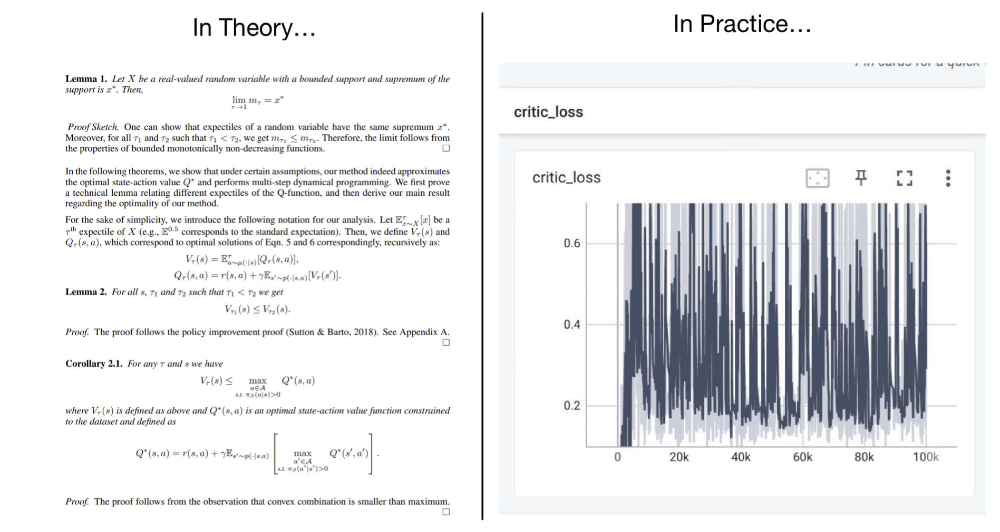

Reinforcement Learning Theory Basics#

在这一讲中，我们介绍基础的一些RL理论知识。首先，仅针对本讲，做一声明： - 忽略global constant。比如，一个方法成功的概率是 \(1-\delta\) ，和是 \(1-2\delta\) ，没有区别。 - 不加说明的范数都是 \(\infty\) 范数，也就是分量的最大值。
What we expect#
首先提问：我们希望从RL理论中获得什么？
Student: 我们希望给出一个定量的刻画！比如说，我们设法计算出，discount是0.98的时候最终的policy获得的Q值的期望值是discount是0.99的时候的0.871倍。
Teacher: 这基本不可能。你这好比用普通物理的知识分析一个实际汽车中的汽油发动机的输出功率：需要考虑的因素太多了，你很难确保你的结果是精确的。
Student: 那……我们希望论证算法可以达到一个界？比如，给定一个算法，我们可以论证在任意的MDP问题下，以超过0.99的概率，它最终到达的Q值不差于最优策略的0.98倍？
Teacher: 还是不可能。现代的RL方法，连收敛性都无法保证，更别提这种强的界了。
Student: 唉，那我们到底能获得什么呢？
Teacher: 我们可以获得一些定性的结论。比如说，某个算法跑出的策略和最优策略的差距，随着state space的增大是变大还是变小？随着horizon（定义为 \(\frac{1}{1-\gamma}\) ）又是怎么变的？此外，还必须强调，即使是这样，我们也无法保证像你所说的，“对任意的MDP问题都给出保证”。实际上，我们往往需要做很强的假设。
也就是说，RL理论的关键问题在于在很强的假设下分析极度简化的问题，并给出一种渐进成立的界。这也与普通的ML theory类似。
更加specific地，我们一般研究两种问题：
- exploration：给定某个exploration方法，我们能否保证在 \(|S|,|A|,T=\frac{1}{\gamma}\) 的多项式次和环境的交互后，到达某种几乎访问了所有有意义的(state,action)对的状态？
- policy learning：假设我们可以完全explore，那么学到的policy在真实的环境中表现如何？
- 这里，“完全explore”就是一种strong assumption，有几种阐述：
- 有一个oracle，可以告诉我们任何一个(state,action)对的下一个state的概率分布；
- 或者略弱一些，对于每一个(state,action)，我们都至少访问了 \(N\) 次，得到了 \(N\) 个next state的样本。
- 这里，“完全explore”就是一种strong assumption，有几种阐述：
注意通过这样，我们把policy learning和exploration解耦合，进而可以分别讨论。
Problem 1: Policy Evaluation with Model#
我们先来研究这第一个问题。这一问题的假设是，我们对于每一个 \((s,a)\) ，从环境的真实分布 \(P(s'|s,a)\) 中采样了 \(N\) 个 \(s'\) ，并使用统计的方法给出一个离散的categorical分布 \(\hat{P}(s'|s,a)\) 。这一个 \(\hat{P}\) 就相当于我们的"model"。
然后，我们使用这一model进行 \(Q\) value的训练。这一部分的算法不是我们关心的内容，因此假设可以学到准确的Q value，也就是bellman方程严格被满足。同时，利用这一Q value（记作 \(\hat{Q}\) ），我们还可以得到一个最优的策略 \(\hat{\pi}^{\star}\) ；而对于原先的环境，也有一个最优的策略 \(\pi^{\star}\) 。我们从而定义下面的六个量：
| Environment | \(P\) (real) | \(\hat{P}\) (model) |
|---|---|---|
| Policy= \(\pi^{\star}\) | \(Q^{\star}\) | \(\hat{Q}^{\pi^\star}\) |
| Policy= \(\hat{\pi}^{\star}\) | \(Q^{\hat{\pi}^{\star}}\) | \(\hat{Q}^{\star}\) |
| Arbitrary Policy \(\pi\) | \(Q^{\pi}\) | \(\hat{Q}^{\pi}\) |
比如说，第一行第二列的意思是，使用 \(\hat{P}\) 训练出来一个Q function，然后把 \(\pi^{\star}\) 在这一Q function下的Q值记作 \(\hat{Q}^{\pi^\star}\) 。
在这一情况下，我们关心几个问题：
- 对于某个任意的policy \(\pi\) ， \({Q}^{\pi}\) 和 \(\hat{Q}^{\pi}\) 差多远？
- \({Q}^{\star}\) 和 \(\hat{Q}^{\star}\) 相差多远？
- （终极问题，也是最有用的问题） \(Q^{\star}\) 和 \(Q^{\hat{\pi}^\star}\) 差多远？注意这一问题就是说我们的model最终能表现的多好。
可以看到，前面两个问题相当于为最后一个问题做了铺垫。我们先研究第一个问题。
Distance of \(Q^{\pi}\) and \(\hat{Q}^{\pi}\)#
首先，我们看一看我们有哪些已知的工具。根据假设，有
我们可以试着把它写为矩阵的形式。为此，引入两个矩阵： \(P\in \mathbb{R}_{(|S|\cdot |A|)\times |S|}\) 对应着环境转移的概率分布；而 \(\Pi\in \mathbb{R}_{|S|\times(|S|\cdot |A|)}\) 对应着reward的期望。这样，我们可以写出
这样，我们就有 \(Q^{\pi}=r+\gamma P\Pi Q^{\pi}\) 和 \(\hat{Q}^{\pi}=r+\gamma \hat{P}\Pi \hat{Q}^{\pi}\) 。由此可以得到
这给出
此时，如果我们估计 \(Q^{\pi}\) 和 \(\hat{Q}^{\pi}\) 的无穷范数（即最大绝对值），我们就有
其中，我们使用了以下比较直观的结论：如果矩阵 \(A\) 满足 \(||A||_{\infty}<1\) （把矩阵的无穷范数定义为每一行的绝对值和的最大值），那么
（这里略去证明，比如一个可能的方法是把左边展开为级数）。接下来，我们只需要考察如何估计等式右边剩下的两个无穷范数。首先，对于 \(\Pi Q^{\pi}\) ，注意到它具有reward的量纲，因此我们必须有一个同样量纲的东西才能bound住它。不妨设 \(r(s,a)\) 具有上界 \(R_m\) ，那么可以给出
而对于 \(P-\hat{P}\) ，这一项实际上是在说，我们采样估计出来的model和真实情况比较相似。因此，我们需要使用一些估计采样的bound。某个比较高级的concentration inequality给出，对于 \((s,a)\) ，采样得到的total variational distance
这也就是说，
（其中 \(N\) 是所有 \(N(s,a)\) 的最小值）。这样，我们把所有这些结果总结起来，就可以得到：
这就给出我们第一个问题的界。我们稍微停下来一下来分析这一问题，可以发现， \(||Q^{\pi}-\hat{Q}^{\pi}||_{\infty}\) 代表我们的model给出的policy \(\pi\) 的评估和环境真正评估的差距。可以首先看到，它对于horizon \(\frac{1}{1-\gamma}\) 是二次的，这很符合我们的直觉（还记得早在第二讲，我们就发现到一步一步这样的走，必定是 \(O(T^2)\) 的误差，因此model-based方法采集出来的人造轨迹就必定是 \(O(T^2)\) ）。其次，可以发现，这个误差和 \(N\) 是根号反比的，因此增加model的训练的样本数，可以显著减小这个误差。
Solving the Full Problem#
令人惊讶的是，现在其实我们就可以完整解决之前提出的问题了！看起来，之前提出的三个问题我们只分析了其中一个，但第二个其实立刻可以估计出来。回顾一下，这一问题是说
\({Q}^{\star}\) 和 \(\hat{Q}^{\star}\) 相差多远？这里，前者 \(Q^{\star}\) 是在真实环境下训练出来的最优policy的Q值，而后者 \(\hat{Q}^{\star}\) 是在model下训练出来的最优policy的Q值。
这相当于比较 \(\sup f(x)\) 和 \(\sup g(x)\) 之间的差距，而我们考虑的第一个问题相当于给出了对于同一个 \(x\) ， \(f(x)\) 和 \(g(x)\) 的差距有多大。因此，可以给出
也就是说，第二个问题对应的距离和第一个是差不多大的（或者不超过第一个的大小）。这样，我们就解决了第二个问题。最后，第三个问题就是前两个的简单组合：
这里第一项是第二个问题给出的距离，第二项则是第一个问题给出的距离，其中取 \(\pi=\hat{\pi}^{\star}\) 。这样，我们就最终得出：
误差
Problem 2: Policy Learning#
前面，我们已经分析了exploration，也就是建立model的准确性（在前面的分析中，我们考虑在model下面的optimal policy，也就是相当于假设有一个很好的算法可以在任意的环境下面学会optimal policy）。而现在，在这一问题中，两个地位调转了——假设我们已经完全了解了环境，也就是可以从transition中无限自由地采样，那么我们究竟能把policy学得多好？
我们来分析fitted Q-iteration 算法。其实，早在第七讲最开始介绍Q iteration方法的时候，我们就已经进行了一定的分析。这里的其实也大同小异。
对于理想中完全准确的 \(Q\) iteration，我们有
这里 \(T\) 就是Bellman operator。但是，现在有两个可能的误差来源：
- 采样误差：我们总归不能从环境中无限地采样，因此 \(P,r\) 只能通过有限的采样来估计；
- 近似误差：我们的 \(Q\) 网络表现能力有限，因此拟合的时候可能存在误差。这里为了简单，我们假设Q 网络的学习目标是 \(\infty\) -范数，而非2-范数。（对应地，我们假设误差很小是假设 \(\infty\) -范数很小，这实际上是比较强的——如果假设2-范数很小，事实上并不能顺利地完成论证。）
据此，我们记 \(\hat{T}\) 为approximate Bellman Operator：
（注意对于没有经历过的 \((s,a)\) 对，我们只能把reward估计为0）而对于 \(Q\) 网络的误差，我们假设
并且
我们的目标就是分析 \(\hat{Q}_{k}\) 和 \(Q^{\star}\) 的差距在 \(k\to \infty\) 的行为。为此，我们分别处理两个误差来源，再设法把他们合并起来。
Analysis of Sampling Error#
首先，我们考虑采样误差。这一误差对应着 \(||\hat{T}Q-TQ||_\infty\) 的估计，其中 \(Q\) 可以是任何的 \(Q\) function。通过直接的代入：
然后，我们观察到 \(||\hat{r}-r||_{\infty}\) 是 \(\mathcal{O}(R_m)\) 的；而 \(||\max_{a}Q||_{\infty}\) 是 \(\mathcal{O}\left(\frac{R_m}{1-\gamma}\right)\) 的。再结合Problem 1中我们分析的 \(\hat{P}\) 的误差，我们可以得到：
（这里我们和PPT里面的略有不同，因为PPT里面实际上认为reward \(r(s,a)\) 也是随机的。这虽然更普适，但鉴于我们之前从没有考虑过这样的情况，引入比较突兀。）
这样，我们就完成了对采样误差的分析。
Analysis of Approximation Error#
对于Approximation Error，我们类似于ML里分析梯度下降那样，来考察 \(\hat{Q}_k\) 和目标 \(Q^{\star}\) 的差距，并试图建立一个递推关系。有：
（注意为了把两个影响分开，我们这里先考虑 \(T\) ，而不是 \(\hat{T}\) 。）注意到， \(T{Q}^{\star}=Q^{\star}\) ，并且 \(T\) 是一个contractive operator，因此有：
这样，我们就可以递推给出：
这就是分析Approximation Error得到的结果。
Combining the Two Errors#
最后，我们把他们结合起来。这一步已经很明确了：
其中最后一步，前一项使用我们对approximation error的假设，而后面一项是sampling error分析得到的结论。
再来观看这一结果，可以发现，我们还是获得了一个对horizon \(\frac{1}{1-\gamma}\) 成平方关系的误差。这有些令人惊讶，说明即使是自由采样的情况下，由于Fitted Q iteration算法本身的原因和采样的有限，我们仍然会面临这个问题。当然，给定更强的假设，可以获得更强的结论，但这里就不介绍。
Reference Papers#
Created: 2024年10月29日 20:50:57